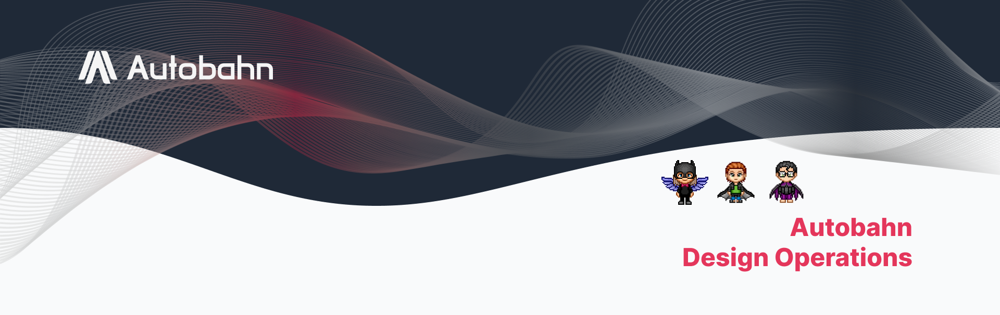
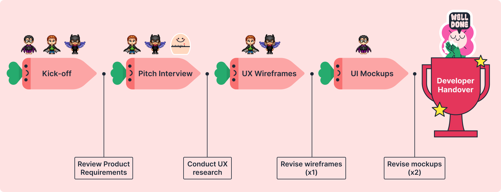
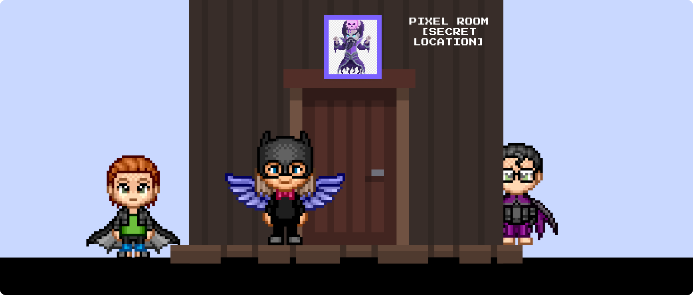
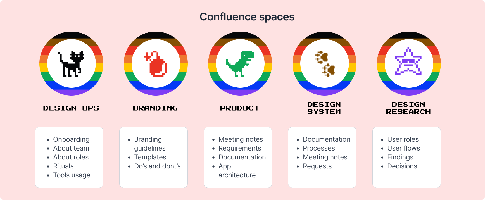
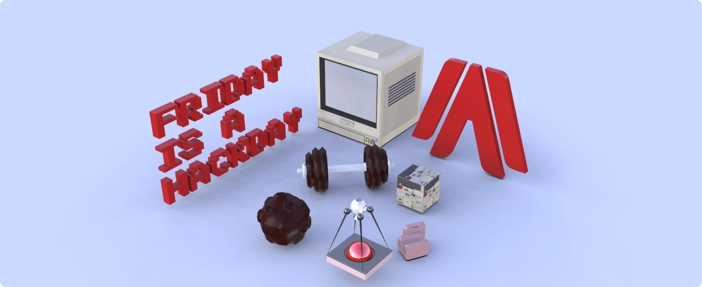

Autobahn Design Ops#
As the team grew, there was a need for more effective and timely workflows. As the most senior designer on the team, and also knowledgable in the cyber security topics, I led the process of establishing design operations and team building.
Processes#

I established a set of processes that enabled us to deliver high-quality and user-centric solutions. The processes included:
Product discovery framework and design workflow - the approach to understand the problem space, define the user needs, generate and test ideas, and iterate on the solutions. We used various methods and tools such as user research, prototyping, usability testing, and design systems to support our workflow.
Design planning, prioritization and tracking with Jira boards - our way of managing our design tasks and deliverables. We used Jira boards to plan, prioritize and track our work, as well as to visualize our progress, collaborate effectively and align with the product roadmap.
Retrospectives and monthly reviews - our opportunity to reflect on our achievements, challenges and learnings. We conducted retrospectives and monthly reviews to improve our processes, identify gaps and opportunities, and celebrate our successes.
Team updates during sprint reviews - our chance to share our work with the stakeholders and the rest of the organization. We presented our team updates during sprint reviews to showcase our work, gather feedback and validate our assumptions.
Communication#

Communication was a key aspect of our work as a design team. We faced some main challenges, such as improving our team’s efforts visibility and working remotely in different time zones. We implemented some solutions to overcome these challenges, such as:
Collaborative work in real-time in Figma with voice feature on - This allowed us to work together on the same files, communicate verbally and visually, and provide instant feedback and support.
Creating Slack channel for Design-Development communication: this enabled us to communicate and align with the development team on various topics, such as the design system, the product requirements, and the design deliverables.
Regular retrospectives that would end with actionable solutions to the past sprint problems and challenges. This helped us reflect on our achievements, learnings, and difficulties, and improve our processes, identify gaps and opportunities, and celebrate our successes.
Pixel Room was a Figma file where we would meet to celebrate accomplished milestones and also team members’ success stories: this was a fun and creative way to acknowledge our hard work, share our personal and professional achievements, and build team spirit.
Guidelines & Documentation#

As a design team, we followed guidelines and communication practices that ensured consistency, clarity, and collaboration. I structured and maintained Confluence to document and divide our activities as follows:
Design Ops - This board served information about our team, such as onboarding, roles, rituals, and tools use best practices. It also served as a hub for accessing other boards and resources.
Branding - This board contained the branding guidelines, templates, and do’s & don’ts. It helped us maintain a coherent and distinctive visual identity across our products and channels.
Product - This board contained product-related work, such as meeting notes, requirements, documentation, and app architecture. It helped us communicate and align with the product team and other stakeholders.
Design System - knowledge base for design system activities: documentation, updates, processes, meeting notes, and component requests. It helped us create and manage a scalable and reusable UI components and patterns.
Design Research - This was a space for design research work, such as user roles, user flows, findings, and recommendations. It helped us understand users, and to inform and validate our design solutions.
Team Growth & Learning#

As the most senior designer in the team, I considered it cardinal to celebrate growth and learning as part of our culture and practice. I organized several initiatives that supported our continuous development and creativity:
Friday was a Hackday - This was a regular workshop where we shared knowledge, tried new tools and techniques, had fun, and experimented with new ideas and concepts. It helped us expand our skills, explore new possibilities, and foster innovation.
Adjective a Day - This was a daily activity where each design team member filled out a Slack bot prompt with an adjective to build a better language base that helped better presentation of ideas and design and developed better empathy. It helped us improve communication, express our emotions, and understand our users.
Figma Best Practices - These were workshops after new Figma major updates or Figma conferences to stay updated with innovative solutions and be more productive. They helped us learn new features, tips and tricks, and best practices for using Figma as our key design tool.
Design System Workshops - These were a series of workshops for developers and designers to ensure everyone understood why we were doing it, why it was crucial, and how it will benefi the product development.